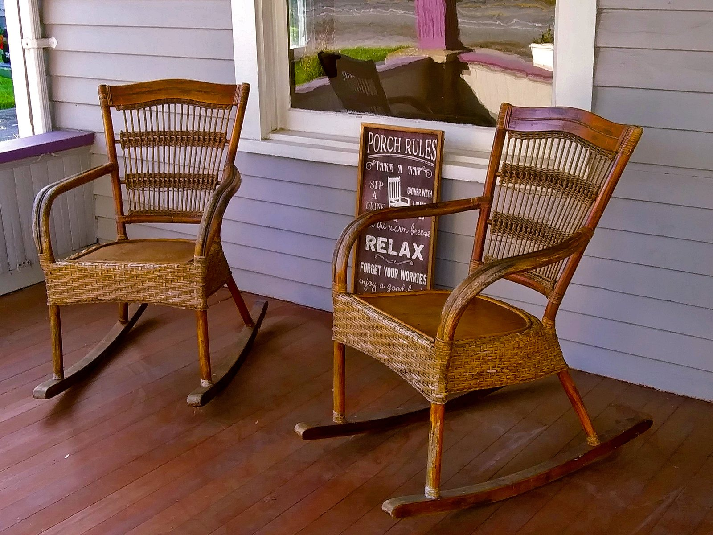

Senior relocation, Connecticut
A move is more than a sale. It’s a relocation — and both ends have to work.
Leaving a longtime Connecticut home means lining up the next place, the belongings, the cleanout and the first night in. I personally coordinate the whole plan, at a pace that fits your family.
5.0 from 101 Google reviewsStart with the why
What’s pulling you toward a new place?
The most settled relocations I see begin with a clear reason. Once that’s named, the timing, the town and the type of home get easier to choose.
Closer to family
Being a short drive from the children and grandchildren, for holidays and for ordinary Tuesdays, instead of a long trip every time.
The weather
Another Connecticut winter of ice, shoveling and heating bills — or a plan that makes winter easier, whether that’s a smaller home here or somewhere warmer.
The next home you worked toward
The retirement place you’ve pictured for years: less upkeep, a floor plan that fits, and more time for what you actually enjoy.
A house that has grown past you
Stairs, empty bedrooms, a yard that’s become a second job. Sometimes the home is still loved, and still more than anyone wants to keep running.
Both sides of the move
A relocation has two addresses
Selling the house you have is only half the work. The other half is landing well — and making sure the dates, the belongings and the people all arrive together.
The home you’re leaving
- A walk-through and a clear sense of value and timing
- Sorting what comes with you, what goes to family, and what can be sold or donated
- Auction or estate sale, cleanout and junk removal, which I coordinate myself
- Prep, pricing and a closing date built around the move, not the other way around
The home you’re going to
- Help thinking through the next town, the next floor plan and what will actually fit
- If you’re leaving Connecticut, an introduction to a realtor I trust there
- A moving week that lines up with closing, so no one is left in between
- Unpacking help at the new place, so the first night feels like yours
Across Connecticut
From one town to the next, or out of state
Some families stay close — West Hartford to a smaller place nearby, or a move to be near children in another Connecticut town. Others are leaving the state after decades here.
Either way, I stay the point of contact. Out-of-state relatives can follow along by phone and email, and most papers can be signed without flying in for every step.
A calm plan
Usually 6 to 12 months, start to first night
A relocation has more moving parts than a simple listing. This is the time those parts are for — and I stay with you through each one.
- Month 1
A conversation first
Why you’re moving, when you hope to be settled, budget, and where the next home might be. No paperwork, no pressure.
- Months 1–2
A home assessment
We walk the current house, talk honestly about value, and sketch what the next place needs to provide.
- Months 2–5
Sorting, one room at a time
What comes with you, what family would like, what can be sold or donated. We never try to empty the house in a weekend.
- Months 3–6
Auction and estate sale
Furniture, collections and household goods can go to auction or an estate sale. I personally coordinate that outreach so you aren’t making those calls alone.
- Months 4–7
Cleanout and junk removal
What’s left is cleared and hauled, so the house is empty, clean and ready to show.
- Months 5–8
Prep, photos and the sale
Small repairs, staging where it helps, then pricing, showings and a closing date that matches the move.
- Moving week
Unpacking at the new place
I help you unpack and set up, so the relocation is finished — not just the sale.
When time is short. A health change or a sudden move to a new community doesn’t leave a year to plan. If that’s where you are, we can compress these steps. I’ll walk you through the trade-offs honestly, so the family can choose what actually fits.
Another Connecticut winter is a reason some families move. It is also a reason some decide to stay, with the right help.

An honest perspective
Sometimes the best financial decision is to stay
I will say this before we talk about boxes and listings: a relocation is not automatically the right move. For some families, staying in the home you love, with the right support, is the better financial decision.
So we look at the options side by side. If staying is the wiser path, I’ll tell you, and I’ll introduce you to people I trust. I’m a real estate agent, not a lender or a care provider — you decide what fits.
In their words
Families I’ve helped move
Melissa was amazing to work with! She made the process so smooth and seamless. She knows someone for everything you can think of for any need you may have while moving. I am moving out of state and she connected me with another amazing realtor and just made the experience so less stressful. She also works super quickly and was just so amazing, can’t say enough good things about my experience.
Melissa is a gem! I truly would not have been able to sell my mom’s home without her care and support of my long distance sale of a treasured family home for over 60 years. She anticipated every detail and had an answer for every challenge. I am so grateful she got us the best price possible as well as a young family that will cherish the house like my family did.
I contacted Melissa based on a recommendation from a friend. She was an absolute treat to work with, pointing out things I never would have noticed and making sure I understood the potential expenses involved to repair them. This girl knows EVERYTHING. Tile, electrical, furnaces, construction and a whole lot more. Such an amazing and knowledgeable agent! I also asked her to sell my condo, and she handled both ends like a pro, perfectly coordinating the closing dates so my move was painless. I completely understand why my friend recommended Melissa. Thank you for everything!
Melissa, has been the best realtor I have ever meet! Multiple reasons! - Always respectful to me as a client - knowledgeable on so many fronts! - Current markets, banking, presentation, required repairs,Interest rates, mortgage options and selling / buying - follow through during and after my selling has been Impressive by all standards! I sincerely look forward to sending all my realtor business to Melissa. Thank you for an awesome experience selling myDad’s home.
Who you’ll be working with
Hi, I’m Melissa
I’m a REALTOR® with KW Legacy Partners in West Hartford, and I help families across Connecticut with the moves that take more than a listing. You’ll work with me directly — including the outreach, the auction or cleanout, and unpacking help at the new home.
I hold the Seniors Real Estate Specialist® (SRES®) designation, which focuses on the decisions that come with later-life moves. More than anything, I try to be the calm person in the room who tells you the truth.
- REALTOR®
- SRES®
- PSA
- KW Legacy Partners
Common questions
Questions people usually ask
What’s the difference between selling a house and a relocation?
A sale closes one chapter. A relocation also has to line up the next home, the belongings, the cleanout, the move itself and settling in. I personally coordinate both ends so the dates work together.
Can you help if the next home is in another Connecticut town, or out of state?
Yes. Many relocations are to another town in Connecticut, and some are out of state. I can connect you with a realtor I trust at the destination and keep both sides of the move in sync.
How long does a relocation usually take?
Most planned relocations take about 6 to 12 months from the first conversation to the first night in the new place. The sorting and cleanout usually take the longest. If you need to move sooner, we can compress the steps.
What if we’re not sure that moving is the right decision?
That’s a good reason to talk, not a reason to wait in uncertainty. Sometimes staying home with in-home care, or using a reverse mortgage, is the better financial decision. We can compare the options before anyone packs a box.
When you’re ready
Let’s start with a conversation
There’s no rush and nothing to sign. Tell me a little about the move you’re considering, and I’ll reach out personally. I ask for a mailing address rather than an email, because I’d rather send you something of value versus adding you to a list.
Prefer to talk now? Call 860.480.4169.